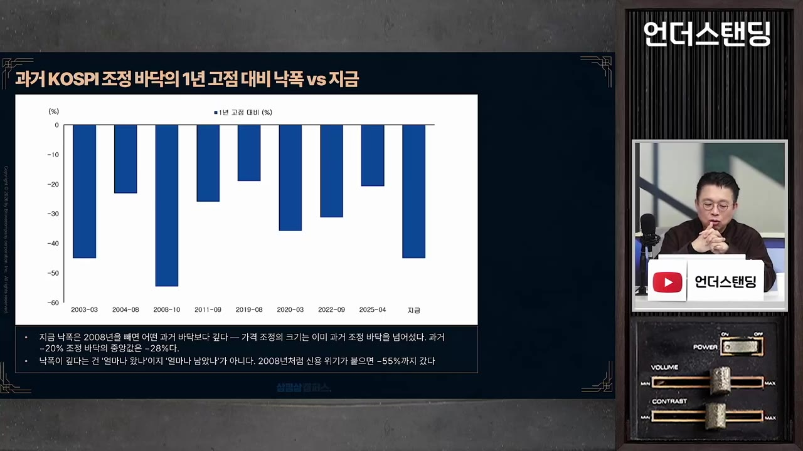
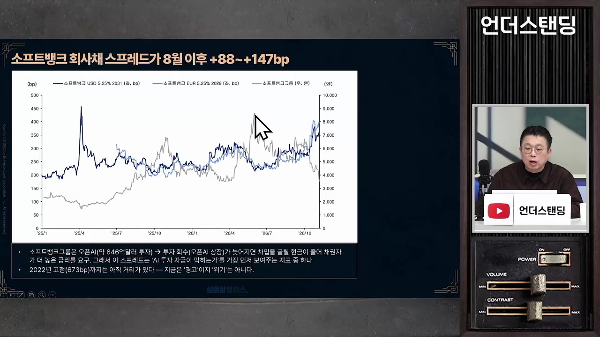
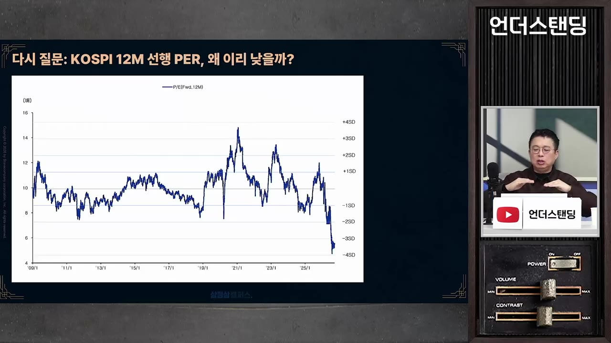
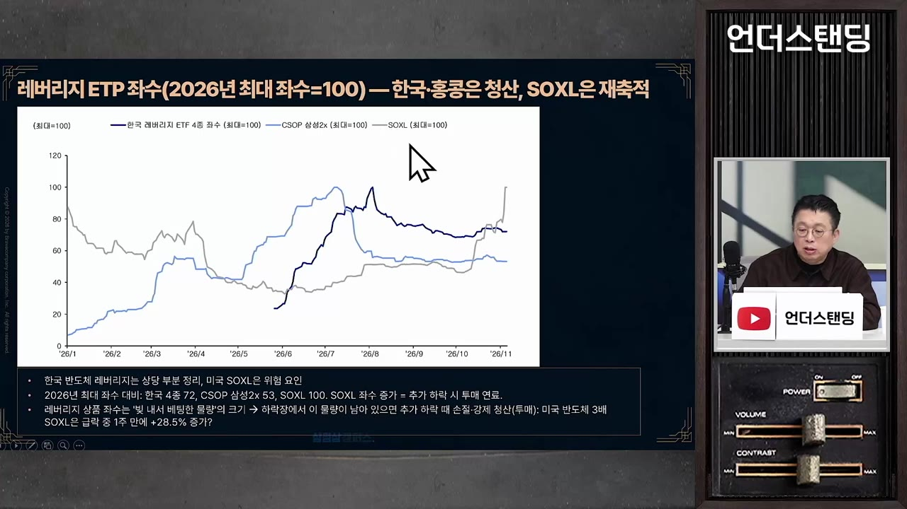
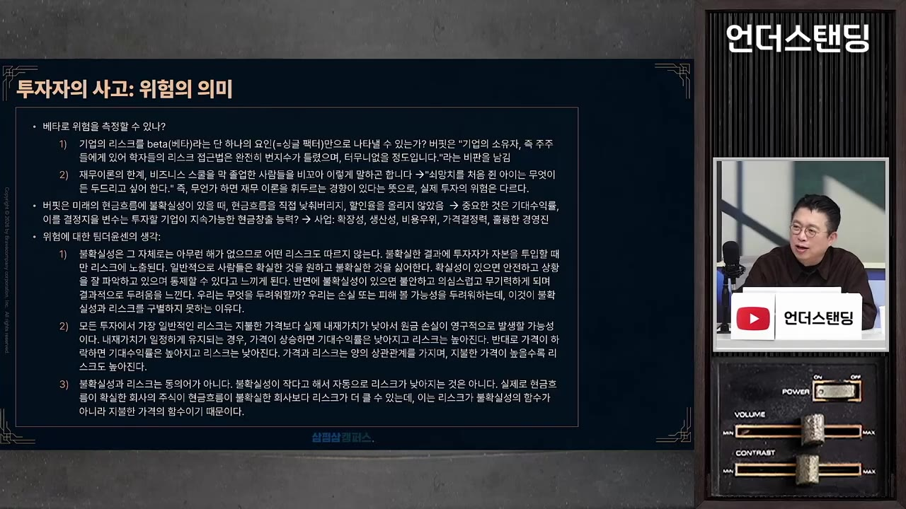

"투자를 과학으로 착각하지 마라" 똑똑한 개미들이 올겨울 하락장에 물리는 이유 (윤지호 경제평론가) [촬영일 26.11.10]
▶ 원본 영상 보기한눈에 보기
- 윤지호 센터장은 지금을 "AI 사이클이 끝난 때"가 아니라, 다음 상승장(코리안 시리즈)을 앞두고 승률을 쌓는 정규 시즌으로 본다. 단기 V자 반등을 노리는 모멘텀 매매는 맞지 않다고 한다.
- 하락의 핵심 원인은 빅테크의 프리캐시플로(FCF)가 마이너스로 꺾인 것, 데이터센터 착공·가동 지연, 규제 우려, 모멘텀 펀드의 청산이 겹친 것이다.
- 선행 EPS(향후 12개월 이익 전망)에 2028년 숫자가 들어오는 2027년 4월 말까지는 기대값 하락과 시장 불안이 이어질 수 있다. 그 뒤 수요(피지컬 AI 등)가 구체화되면 방향이 바뀔 수 있다는 것이 그의 시나리오다.
- 위험은 불확실성이 아니라 지불한 가격의 함수다. 좋은 기업을 가치보다 싸게 사고, 현금 20~30%를 둬서 버틸 체력을 확보하라고 조언한다.
- 지금 시장은 "AI 끝났다"는 의심이 확신으로 바뀌는 중이라고 보고, 이것이 오히려 기회라는 것이 그의 결론이다(본인 판단이며 틀릴 수 있다고 인정).
이런 분께 도움이 됩니다
- 최근 급락장에서 "지금 사도 되나" 고민하는 개인 투자자
- AI·반도체 주도 장세가 끝난 건지 판단 기준이 필요한 분
- 모멘텀 매매와 가치 투자의 차이, 하락장 대응 원칙(현금 비중, 레버리지 ETF 회피)을 정리하고 싶은 분
핵심 내용
결론: 단판 승부가 아니라 시즌 관리
- 영화 〈머니볼〉에 비유한다. 승률(출루율)을 높이는 장기전 전략이 맞는데, 시장은 이를 7전 4승제 단판처럼 보고 있다고 한다. (5:24)
- 지금은 "코리안 시리즈에 나가기 위한 승률을 쌓는 시기"이고, 시즌이 끝났다고 보지 않는다. (57:20)
- 지금은 모멘텀 투자자가 아니라 가치 투자자의 시간이다. 여기서 말하는 가치는 저PER 주식이 아니라 이익과 매출이 같이 늘어나는 성장 가치 기업이다.
- 모멘텀 투자자는 올라갈 때 사고 밀릴 때 파는데, 지금은 올라갈 때 사서 내려갈 때 손절하는 일이 반복되는 장이다.
- 모멘텀 투자자가 1년 안에 돈을 못 벌면 그만해야 한다고도 말한다.
- 본인이 8천~9천대에서는 조심하라고 했고, 5천 전후는 매수 구간으로 본다고 밝힌다. (자막상 지수 수준은 발언 그대로)

지금 하락의 원인
- 현금흐름 쇼크: 알파벳은 실적은 좋았지만 영업현금흐름(OCF)이 꺾이고 FCF가 마이너스로 갔다. 광고로 생각보다 돈을 못 번다는 사실이 확인됐다는 해석이다. 아마존도 투자는 늘고 OCF는 줄고 있다. (21:09)
- 마이크로소프트는 데이터센터 투자를 가장 먼저 줄이며 조심스럽게 움직여 덜 빠졌다.
- 순차입 상태인 메타와 오라클이 특히 부담이라고 한다.
- 회사채 스프레드가 오르고 있고, 소프트뱅크 실적은 "박살"이라고 평가한다. 주가가 약 60% 하락했고 오픈AI 투자 회수 문제도 있다.

- 데이터센터 지연: 텍사스 등에서 착공 전 물량이 많고 정치·인허가·전력 연결 문제로 가동이 늦어진다. 수요가 사라진 게 아니라 매출 인식이 뒤로 밀리는 것이고, 시장은 그 노이즈를 주가에 반영해 왔다고 본다. (27:41)
- 아파트 건설 중 유물이 나와 공사가 늦어지는 것과 같다는 비유를 쓴다.
- 규제 우려: 민주당이 상원을 이겨 엘리자베스 워런이 은행위원장으로 온다면 재무제표 밖 부채(리스, SPV, 순환 투자)를 들여다볼 수 있다. 메타의 하이페리온 리스가 사례다. 이 규제가 실제로 어떻게 될지는 아직 모른다.
- 수급: 모멘텀 펀드(고베타 롱)가 이번에는 7월보다 더 깊이 청산되고 있다. 7월은 수급 이슈만 있었는데 이번에는 펀더멘털 우려가 결합됐다. (15:25)
- 12월 9일 FOMC가 관건이다. 인상 확률은 자막상 약 60%이고, 유가가 안정되면 금리 인상 속도가 주춤해질 여지가 있다고 본다.
💡 "AI 수요가 사라졌다"가 아니라 "하이퍼스케일러의 돈이 모자라고 가동이 늦어진다"는 문제로 본다.
밸류에이션 해석: 낮은 PER은 안전판이 아니다
- 밸류에이션은 절대 기준이 아니라 상대·주관적 개념이다. 올라갈 때는 긍정이, 내려올 때는 부정이 자기 강화된다. (8:28)
- PER이 낮다는 것은 시장이 성장 둔화를 이미 반영하고 있을 가능성이 크다는 뜻이다. 피터 린치의 "고PER 저PER" 이야기처럼 저PER은 이익이 일시적으로 부풀었을 때 나올 수 있다. (10:25)
- 모건스탠리 숑킴(자막상 보고서)은 SK하이닉스 목표가를 260만→160만 원, 삼성전자를 약 30만 원으로 낮췄다. 내년 이익은 오히려 올렸지만 내후년부터 마진이 60%→30%로 꺾인다고 본다. (11:55)
- 윤 센터장은 마진이 낮아져도 증설로 매출이 늘면 이익 총액은 유지될 수 있다고 본다. "P 사이클에서 Q 사이클로" 넘어가는 과정이라는 해석이다.
- 그래도 이는 시장이 어떤 기대를 반영하는지를 보는 전략가의 접근이라고 말한다.
- 스트레스 테스트: 내년 이익이 반토막 나도 PER 8배(역사적 하단) 기준 KOSPI는 약 5,500이라는 계산이다. 이 숫자를 매수 근거로 든다.

전망 타임라인: 언제 방향이 바뀌나
🔁 시장 전망 시나리오
- 올 겨울
- 12월 9일 FOMC
- 내년 4월 말
- 내년 봄 이후
- 2028년 이후
- 1올 겨울
중간선거 이후 이익·감익 이슈가 반복돼 시장이 계속 멀미를 하는 구간. 과민 반응이 이어질 수 있다.
- 212월 9일 FOMC
금리 인상이 마지막이 되거나 속도가 줄면 숨통이 트일 수 있다. (32:44)
- 3내년 4월 말
선행 EPS에 2028년 1분기 숫자가 들어오기 시작한다. 이때까지 기대값이 내려오고, 28년이 확인되면 하락이 진정된다. (17:22)
- 4내년 봄 이후
부정적 편견이 약해지고 긍정적 편견이 반영될 여지. 토큰 수요, 수익화, 피지컬 AI가 구체화되는 시기다.
- 52028년 이후
피지컬 AI(로봇·공장)가 가시화되고 증설 물량이 팔려 이익 감소가 제한된다는 시나리오.
- 선행 EPS는 미래가 아니라 12개월 앞을 평균 낸 후행적 숫자다. 그래서 하락 기대값이 정리되는 시점을 4월 30일로 계산한다.
- 이번에도 7월 같은 급반등은 체력이 약해 어렵다고 본다.
- 개인이 빚내서 사는 3배짜리 ETF 좌수가 10월부터 늘고 있는 것을 우려한다. 빚투 물량이 쌓여 있으면 추세적 상승이 어렵다는 것이다. (36:52)

💡 반등은 있어도 추세 반전은 "4월 30일 이후 수요 구체화"가 확인돼야 한다는 논리다.
왜 AI 사이클이 끝나지 않았다고 보나
- 미국 경제 성장이 투자 중심이라 AI 투자를 멈추기가 어렵다. 소비·정부 대신 투자가 GDP를 끌고 있기 때문이다. (46:49)
- 이번 투자는 IT 버블 때의 어중이떠중이 벤처가 아니라 선수들(제프 베이조스 등)이 풀베팅한 것이다. 돈이 되니까 하는 것이라고 본다. (1:15:00)
- 데이터센터가 고철 덩어리가 되는 상황이 상상되느냐고 묻는다. 만든 것도 잘 돌아갈 것이고 더 만들 것이라는 입장이다.
- 화이트칼라 대체보다 블루칼라 대체(피지컬 AI)가 수요를 더 키울 것이라고 본다. 오픈AI 초기에 사용량이 지금처럼 많지 않았던 것처럼 방향만 보여도 내러티브가 작동한다고 말한다. (54:03)
- 메모리 업계도 미국이 가격을 낮추려 해서 제어 압력이 있겠지만, HBM 이후에도 한국 기업이 만들 가능성이 크다고 본다.
- 2001년 시스코 같은 급락(ROE 붕괴)은 구글·아마존이 현금을 만드는 기업이라 가능성이 낮다고 본다.
투자 행동 원칙
- 위험 = 지불한 가격: 불확실성 자체가 아니라 가치보다 비싸게 사서 돈이 깨지는 것이 위험이다. 가치보다 싸게 사면 불확실성이 있어도 덜 위험하다. (43:02)

- "변동성은 위험이 아니라 영구적 자본 손실이 위험"이라는 버핏·하워드 막스 관점이다.
- 나눠서 사기: 최악(약 4,500)을 가정해도 5천 전후부터 나눠 사서 불확실한 뉴스가 나올 때마다 더 모으는 방식이다. 4,730 같은 바닥을 맞추려 하지 않는다. (48:07)
- 현금 20~30%: 베타를 낮추는 가장 확실한 방법이다. 음식료 같은 저베타 주식도 빠질 때는 같이 빠졌다. (1:03:25)
- 사야 할 기업: 영업이익률이 개선되고 ROE가 좋아지며 경제적 해자와 주주 환원이 있는 곳. 그는 반도체, MLCC, 전력 인프라, 조선, 화장품 용기 제조사를 예로 들었다.
- 피할 것: 단기 반등을 노린 모멘텀 매매, 3배 레버리지 ETF, 평단이 높은 상태에서의 무리한 비중.
- 소로스의 재귀성(주가와 펀더멘털이 서로 영향): 부정적 편향이 강한 지금은 나쁜 뉴스에, 내년 봄 이후는 좋은 뉴스에 더 비중을 두라는 의미로 해석한다.
투자는 과학이 아니다
- 금리가 오르면 주가가 빠지기도 하고 오르기도 한다. 반복 가능한 실험이 성공해야 과학인데 투자는 그렇지 않다. (1:19:10)
- 똑똑한 사람일수록 인과관계 설명에 집착해 투자에 실패하기 쉽다고 말한다. 다만 이는 본인 의견이라고 단서를 단다.
- 미디어 과열(공중파 특집, 정치 프로의 주식 이야기)이 상투 신호였다. 지금은 반대로 "주식 얘기도 하지 마" 분위기가 올 때 반등이 가까울 수 있다고 한다. (1:17:15)
- 사람들의 AI 불신이 커지고 "끝났다"는 의심이 확신으로 바뀌는 지금이 기회가 될 것이라는 게 그의 "촉"이다. 본인도 이는 논리가 아닌 감각이라고 인정한다.
기억할 숫자·인용
- 고점 대비 낙폭이 2008년을 제외하면 과거 어느 때보다 깊다(MDD 그래프 설명).
- 최악 시나리오 지수: 약 4,500 (신용 위기급이 아니면 현재에서 약 10% 추가 하락).
- 내년 이익 반토막 + PER 8배 → KOSPI 약 5,500.
- 12월 9일 FOMC, 인상 확률 약 60%(자막상).
- 선행 EPS에 2028년 숫자가 들어오는 시점: 2027년 4월 30일.
- 숑킴: 하이닉스 목표가 260만→160만 원, 삼성전자 약 30만 원, 마진 60%→30%.
- 현금 비중 20~30% 권고.
- "리스크는 불확실성의 함수가 아니라 지불한 가격의 함수다."
- "내 계좌가 깨지고 있다고 해서 내가 머리가 좋은 건 아니다."
생각해볼 점
- 영상 속 주장과 내 의견 구분: 이 노트의 전망은 모두 윤지호 센터장 개인의 시각이다. 그는 "내가 틀릴 수 있다"고 여러 번 말한다.
- 논리의 긴장: 진행자도 지적한 부분이다. "하이퍼스케일러가 돈이 없어 투자를 못 한다"는 걱정을 인정하면서, 2028~2030년에 증설 물량을 그들이 다 사 갈 것이라고 가정하는 것은 충돌할 수 있다. 윤 센터장은 토큰 수요·수익화가 확인돼야 한다고 답하지만 그 확인 시점과 강도는 불확실하다.
- 사후 확증 편향 주의: 센터장이 지난 8~9천에서 경고했다는 이력이 지금 전망의 신뢰도를 높이는 것은 아니다. 촬영일(2026-11-10) 시점의 판단이며 이후 시장 상황에 따라 달라질 수 있다.
- 자막이 자동 생성이라 지수·주가·금액 일부는 "자막상 불분명"하다. 투자 전에 원 영상과 공식 자료로 확인하는 게 좋다.
바로 해볼 일
- 내 계좌에 현금 비중이 있는지 확인하고, 하락장에서 버틸 수 있는 수준(20~30% 안팎)인지 점검하기
- 보유 종목이 "이익·매출이 함께 늘어나고 ROE가 개선되는 기업"인지, 아니면 모멘텀 때문에 산 것인지 구분해 보기
- 레버리지·빚투 물량이 있는지 확인하고, 12월 9일 FOMC와 2027년 4월 말 같은 일정을 달력에 표시해 두기